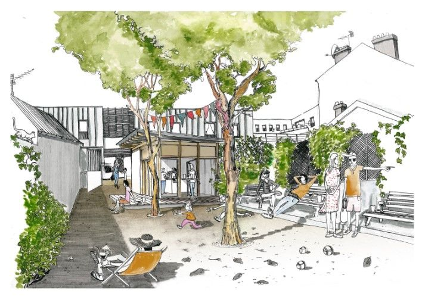
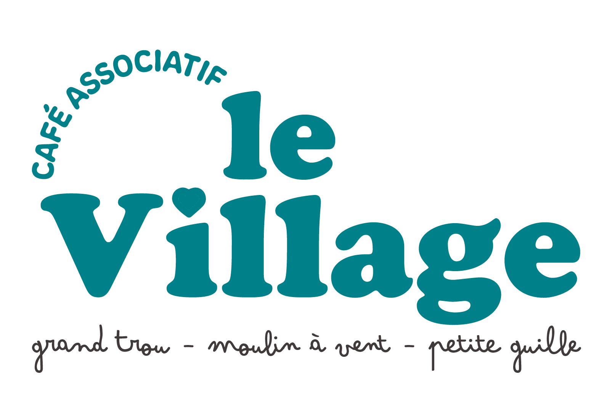

Illustration : Collectif Pourquoi Pas / Lucie Bulot architecte
Horaires d'ouverture
- Mardis 14h30 – 19h00
-
Vendredis
16h00 –
21h0022h00 en été - Dimanches 10h00 – 13h00
Le Village est un café associatif. L'adhésion est obligatoire pour la vente d'alcool. Non-adhérents : +1€ par consommation. Adhésions disponibles sur place tous les jours d'ouverture.
Où nous trouver
8 rue Chalumeaux, Lyon 8e